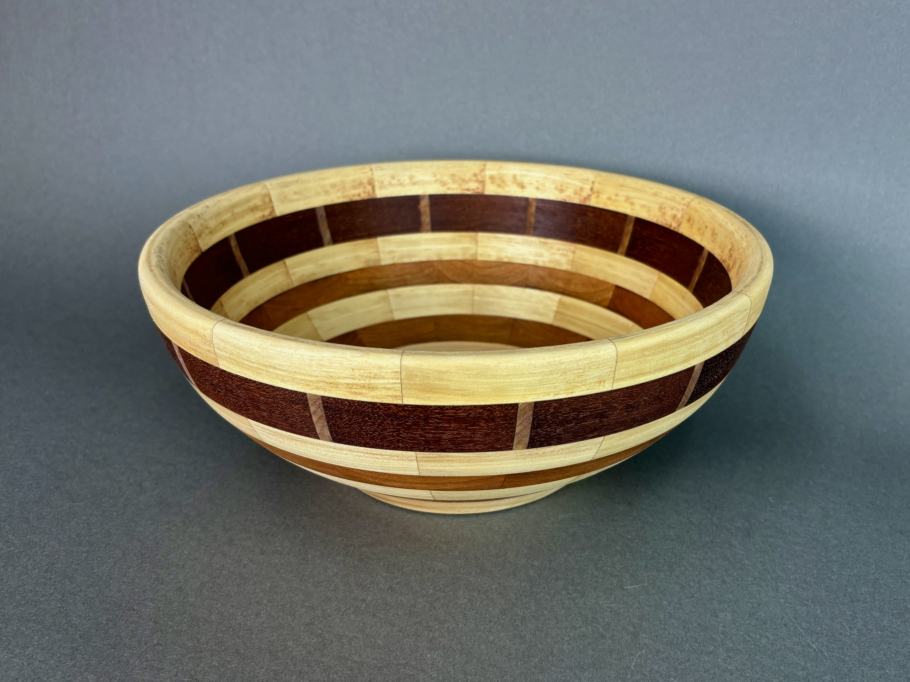
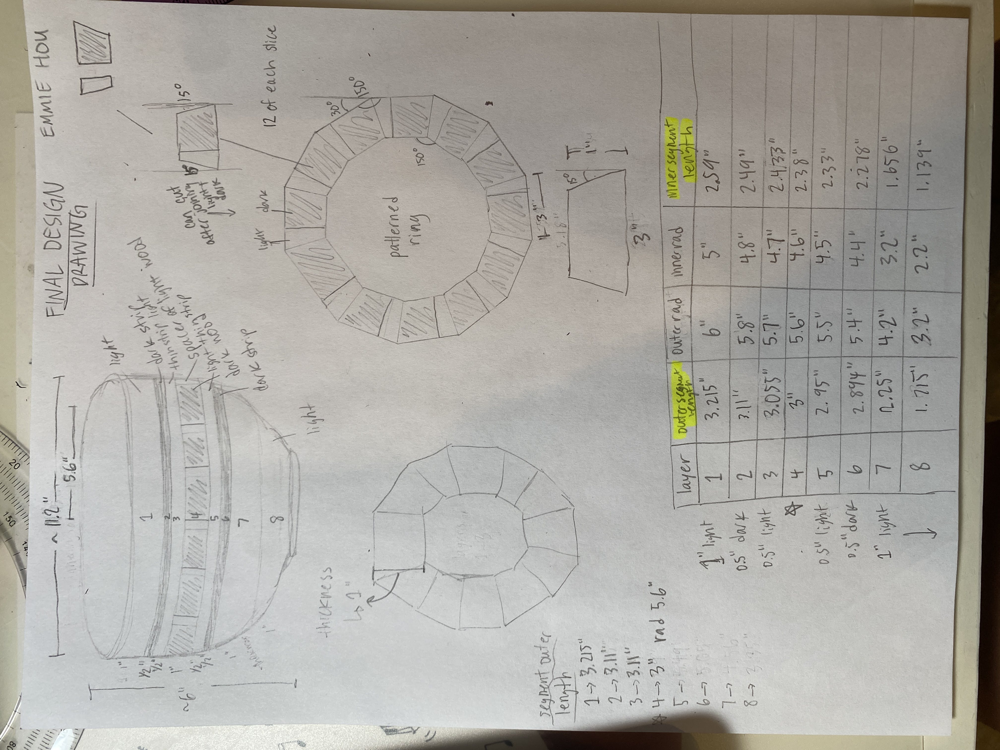

segmented bowl

a handcrafted segmented wooden bowl made using joinery and lathe turning techniques. featuring a combination of poplar, walnut, and redwood, this bowl highlights beautifully contrasting wood colors and textures for a visually appealing design.
design process
this bowl was meticulously planned and created through a multi-stage woodworking process:
- designed detailed plans specifying precise measurements and angles for segmented rings
- cut, shaped, and carefully assembled individual segments into rings using poplar, walnut, and redwood to achieve a dynamic pattern
- laminated segments securely together, ensuring strong and seamless joints
- turned on a lathe to achieve a smooth, symmetrical form, emphasizing natural grain patterns and creating a refined finish
- sanded and applied beeswax finish to enhance the natural beauty of the wood and protect the surface
materials
- poplar, walnut, and redwood
- beeswax finish





features
- precise segmented construction
- multi-wood contrasting aesthetic
- smooth, polished finish
- handcrafted quality
- functional and decorative design